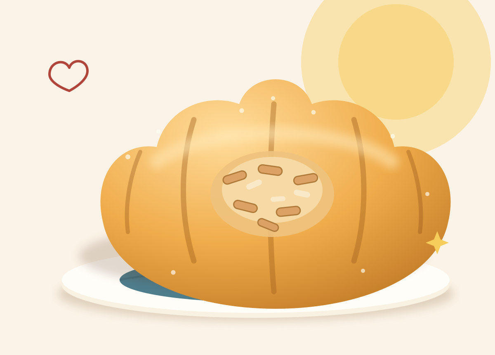
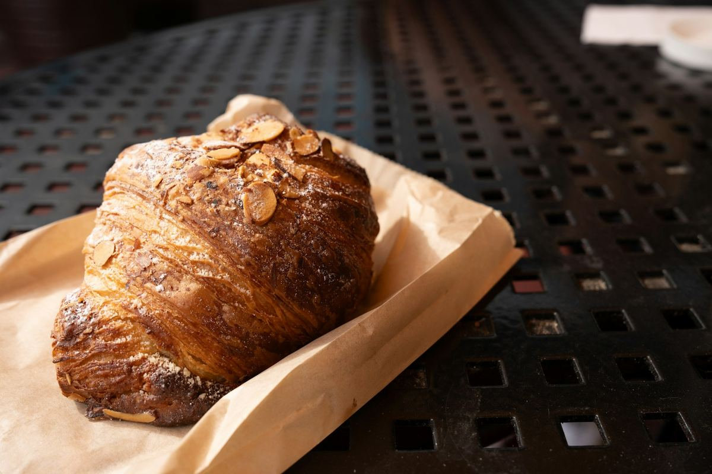
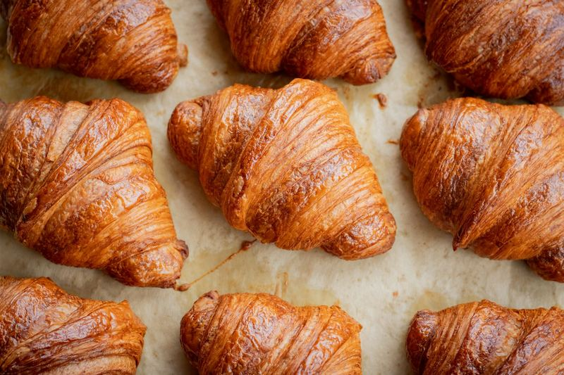
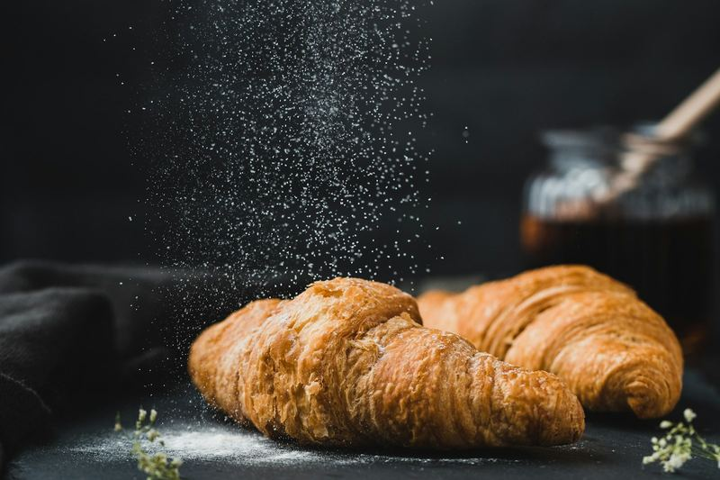
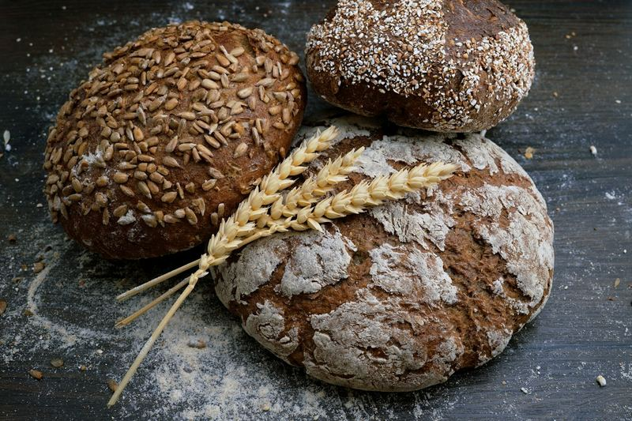
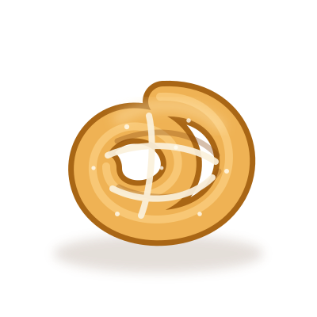

Viennoiserie · Baked fresh each morning
The almond croissant
A twice-baked, all-butter croissant filled with house-made almond frangipane and finished with toasted almonds and a light dusting of icing sugar.

Why it exists
A croissant’s second bake
A second bake gives yesterday’s croissants a crisp, golden finish and a soft almond centre.
Each croissant is split, filled with house-made frangipane and baked until the almond cream is light and the edges are beautifully crisp. We finish it with toasted almond flakes and a delicate dusting of icing sugar.
Enjoy it warm with a flat white, or take one along for a slower morning.
Ingredients
- Wheat flour (stone-milled, organic)
- Westgold butter, folded through the dough
- Whole almonds & almond meal
- Free-range eggs
- Caster & icing sugar
- Sea salt, fresh yeast, whole milk
Allergens
- Contains: nuts (almond), gluten (wheat), dairy, egg
- May contain: traces of other tree nuts and sesame
Sample allergen information for demonstration only. Always confirm allergens with the bakery.
Serving suggestions
- Eat warm, standing outside, with a flat white
- Best enjoyed warm, to appreciate the crisp layers
- Serve with fresh berries for a relaxed brunch
- Warm briefly in a hot oven to refresh the pastry



Goes well with
More from our bakery

Country sourdough
A naturally leavened loaf with a crisp crust and a delicate tang.
Read the story →
Seasonal celebration cake
A layered, hand-finished cake made for occasions worth marking.
Read the story →
The full cabinet
Hand-laminated pastries, seasonal tarts and freshly baked bread.
Browse the menu →Choose a selection for your pastry box.
Just saying.